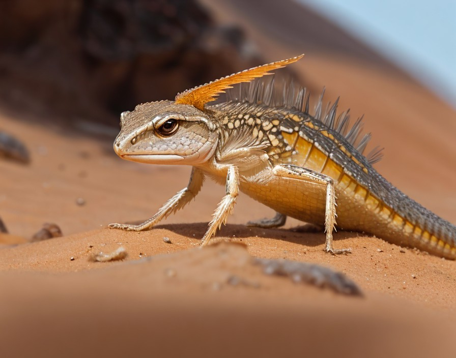

Description: These agile reptilian creatures navigate the sandy terrain with ease, using their long, muscular legs. They primarily feed on small insects and scavenge for plant matter. Sandstriders are known for their solitary behavior and can live up to 30 Earth years.
Planet: Aurelia